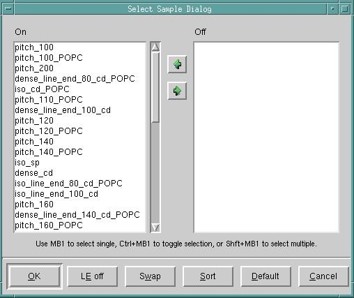

Follow this procedure
to ‘clean’ (check the locations of markers and modify them to where
they are in a correct location) in the gauge object and sample spreadsheet.
This procedure ensures accuracy of the sample structures. Use CM1
Center for this procedure.
Procedure
- In Calibre WORKbench, load
the layout file.
- Access
the CM1 Center tool ( menu
item).
- In CM1
Center, load your gauge file ().
- Switch to the CM1 Center Gauges tab
if it is not already selected.
- Click Select.
Click OK on the pop up window that appears (Figure 1). This will select all the structures.
Figure 1. Sample Sheet, Select All
- Select .
A dialog box appears for you to specify an empty layer to draw the
gauge markers on. You can also narrow the selection to only selected
gauge markers and clear the layer of old markers before the tool
writes the markers.
- Zoom in to a feature on the
layout in Calibre WORKbench and examine its gauge marker. You can
also click View repeatedly to iterate through
the marked pattern list.
- Ensure the following conditions
exist for each gauge:
Make sure the gauge marker
is on the centermost line for each cluster of lines (or centermost
contact for each cluster of contacts).
If there are problems
with the gauge location, make manual corrections to the X or Y value
as needed.
Check the Gauges tab
for the structure type, ensuring that the Location setting is 0
for lines and Location is 1 for spaces.
If the Location does not match
the marker, make a manual correction to the Location field.
Tip You can
select multiple cells by shift-clicking them. You can then click
the Set Value button to bring up a dialog
box that sets the values for all the selected cells, or the Weight button
to set the weight for the selected cells.
You can
also copy selected rows in a column to a specified alternate column using
the dropdown
option.
- Save your
gauge data () and modified
sample spreadsheet.
Note: The Copy Column dialog box
supports Tcl operations that operate on the selected column. A simple
copy operation is provided by default, but another use for the dialog
box can be to randomize the Measured column such as the following
code:
proc CopyCmd { inp } {
set val [expr $inp + rand() -0.5]
return [format “%.3f” $val]
}